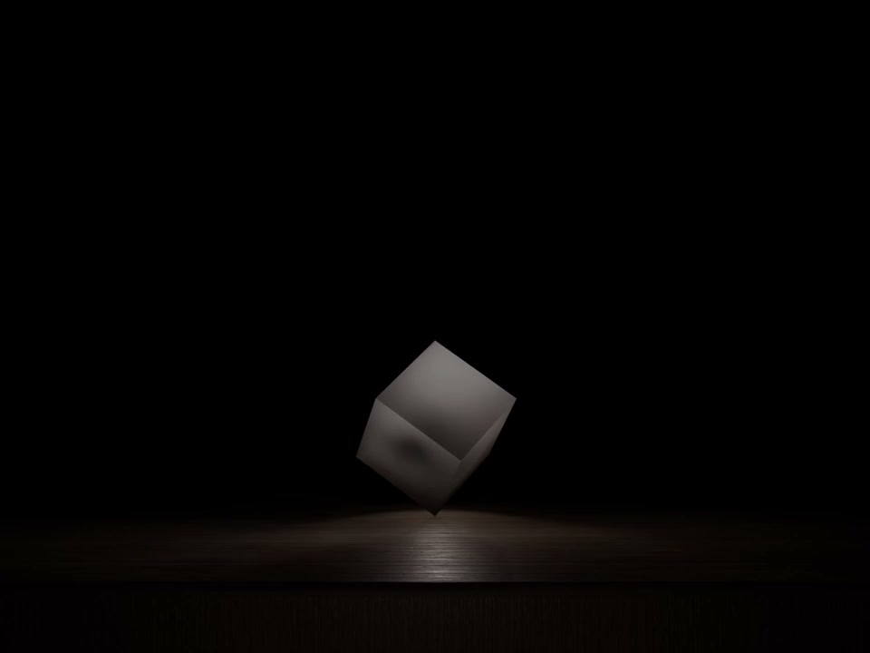

Opere
The Stage — Acts of a Lucid Silence
Una trilogia di opere video 1/1 su un palco spoglio. Ogni atto mette in scena un singolo stato emotivo, presente dal primo istante, isolato dalla sua causa.
-
 Act I
I Have To
Act I
I Have To
-

Act II I Could - Act III I Don't